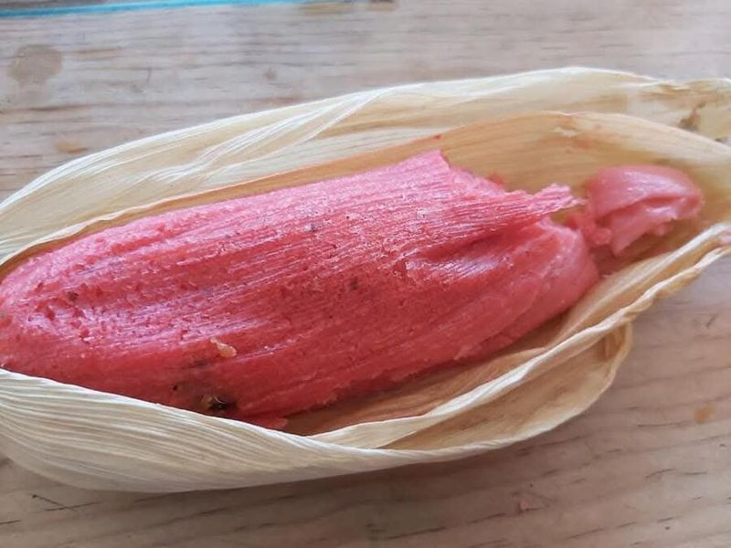
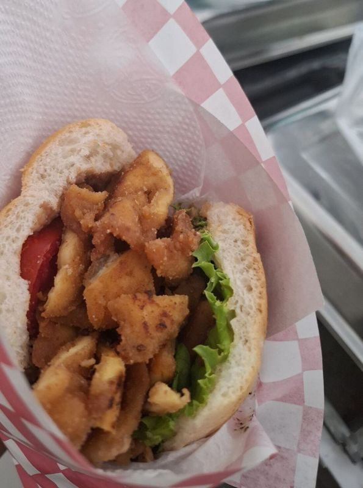
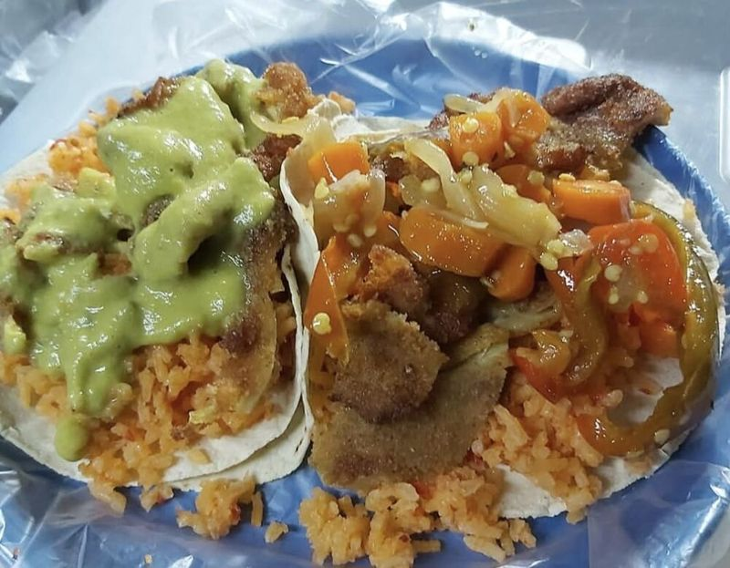
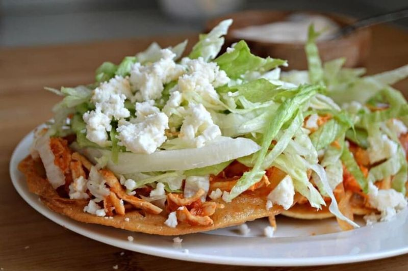
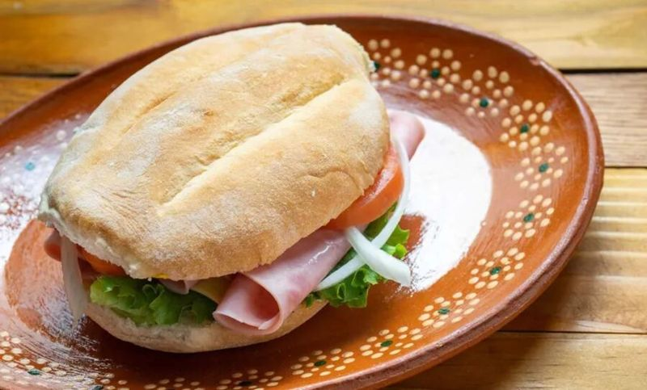
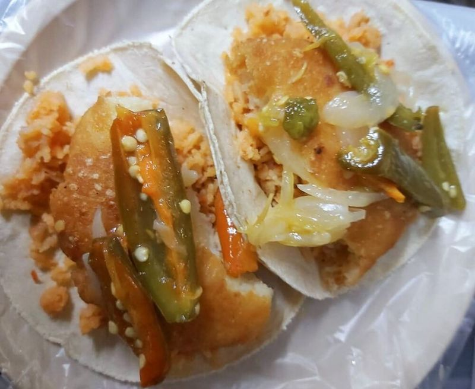
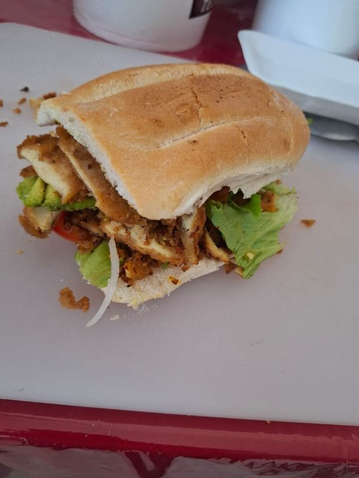

★ Cocina casera desde el fogón · Cuernavaca
Tamales La Candelaria
Casi 30 años de tamales, tortas y antojitos hechos como en casa, todos los días.
Abrimos todos los días de 8:30 p. m. a 8:30 a. m.
También:TortasTacos acorazadosTostadasAtoles
tradición
0
casi 30 años alimentando a Cuernavaca
★ Nuestra historia
Todo empezó con un tamal.
Hace casi tres décadas, los tamales fueron de lo primero que se vendió en La Candelaria. Gustaron tanto que se quedaron en el nombre, y a su alrededor fueron llegando las tortas, los tacos acorazados, las tostadas y los atoles.
Hoy seguimos en Lomas de la Selva, cocinando como en casa y sirviendo todo al momento.
- 🔥 Desde el fogón
- 🤲 Hecho al momento
- 🏡 Sabor de casa
★ Hecho al momento
Lo que sale de la cocina.
Una probadita de nuestros platillos, tal como llegan a la mesa. Desliza para ver más →

Tamal dulce de fresa 
Torta de milanesa 
Tacos acorazados 
Tostada de tinga 
Torta de jamón 
Acorazados con curtido Tostada de pata 
Milanesa con aguacate
★ Encuéntranos aquí
Cómo llegar
Ven por los tuyos calientitos.
📍 Gustavo Gómez Azcárate 101, Col. Lomas de la Selva, 62270, Cuernavaca, Morelos
A un costado del Hospital Dr. José Parres, frente al Albergue Familiar.
Todos los díasde 8:30 p. m. a 8:30 a. m., toda la noche